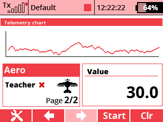

Tato aplikace umožňuje zobrazit jednu vybranou telemetrickou veličinu do grafu na hlavní obrazovce.
V menu zvolte položku Aplikace - Uživatelské aplikace. Stisknutím klávsy F(3) otevřete dialog pro výběr aplikací. Zde vyberte soubor "Sensors".
V menu zvolte položku Časovače/senzory - Údaje na hlavní obrazovce. Zde vytvořte novou položku a vyberte "Telemetry Chart". Aplikace bude mít vlastní obrazovku na displeji.
Zdrojové kódy můžete stáhnout z oficiálního repozitáře JETImodel Lua-Apps GitHub.